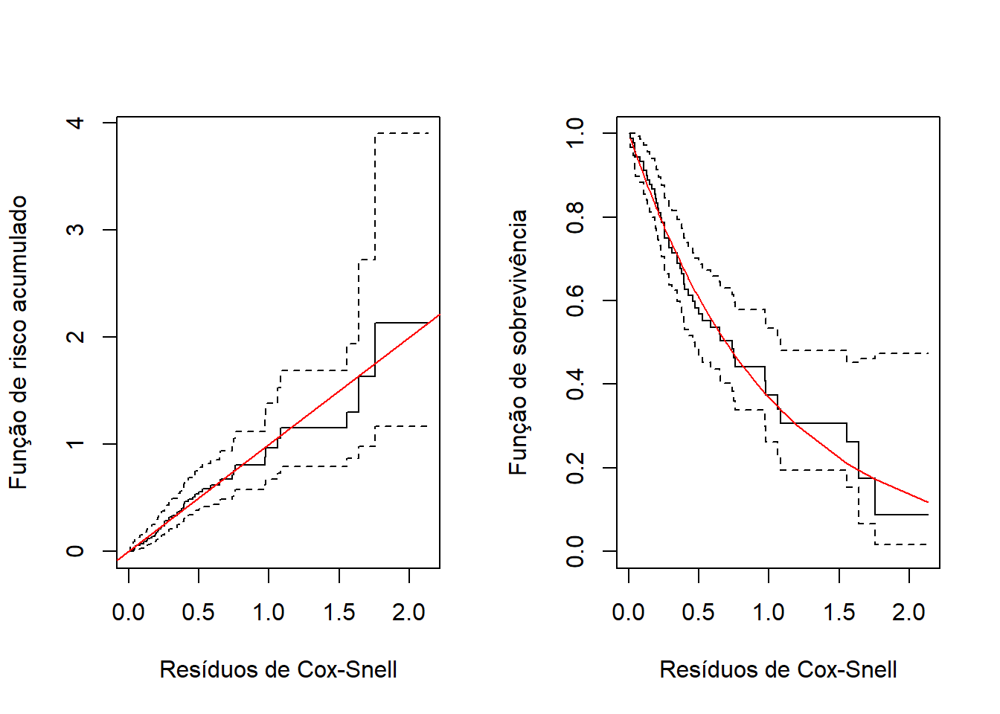
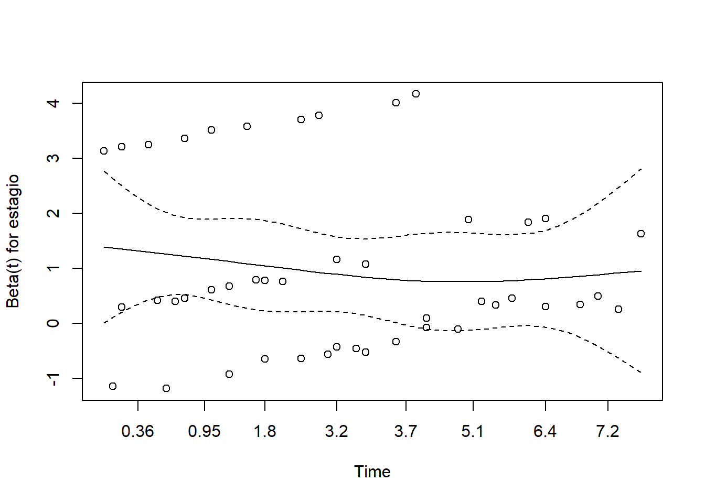
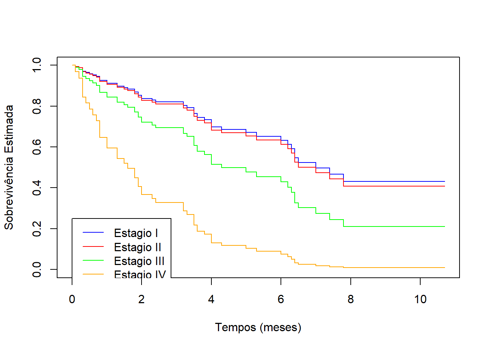
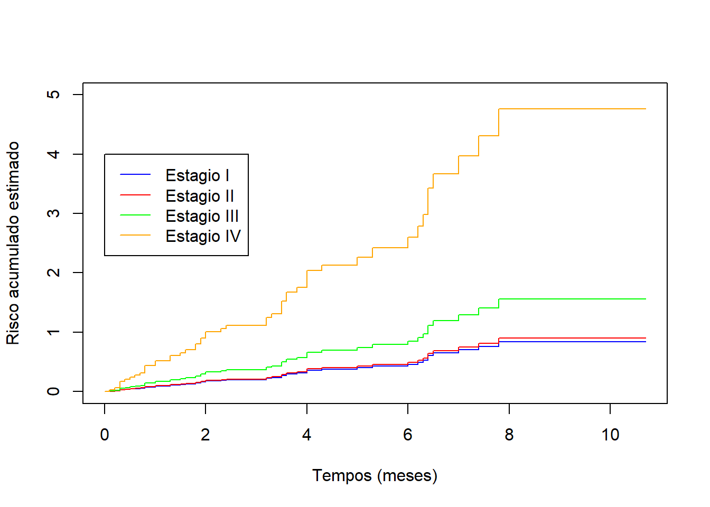

Código
require(survival)Para esta sexta aula prática de Análise de Sobrevivência e Confiabilidade, precisaremos do seguinte pacote:
require(survival)survival: É o pacote básico para o estudo de Análise de Sobrevivência e Confiabilidade. Contém as principais rotinas, incluindo definição de objetos Surv, curvas Kaplan-Meier, modelos Cox e modelos paramétricos.Neste exemplo, os dados considerados referem-se a um estudo, descrito em Klein e Moeschberger (2003), realizado com 90 pacientes do sexo masculino diagnosticados no perÍodo com cancer de laringe. Para cada paciente, foram registrados, no diagnóstico, a idade (em anos) e o estágio da doença (I = tumor primário, II = envolvimento de nódulos, III = metástases e IV = combinações dos 3 estágios anteriores), bem como seus respectivos tempos de morte ou censura (em meses). Os estágios encontram-se ordenados pelo grau de seriedade da doença (menos sério para mais sério). A base de dados está armazenada no objeto laringe.txt.

Um estudo realizado para comparar dois tratamentos pós-cirúrgicos de câncer de ovário, envolveu o acompanhamento de 26 mulheres após a cirurgia de remoção do tumor. A resposta foi o tempo (em dias), contado a partir do início do tratamento (aleatorização) até a morte do paciente. As **seguintes covariáveis foram registradas: Idade e Resíduo resíduo (ParcRemovido se o resíduo da doença foi parcialmente removido e Removido se foi completamente removido). Os dados encontram-se no arquivo ovario.txt
Para começar a nossa análise dos dados de câncer de laringe, vamos carregar a base de dados:
dados<-read.table("laringe.txt",header=T)No R o ajuste do modelo de regressão de Cox será feito a partir da função coxph do pacote survival. A sintaxe da função e sua saída é muito parecida com modelos paramétricos que ja ajustamos:
coxph(formula = Surv(Tempos~Cenx)~Covariaveis,
data = dados)Como temos duas covariáveis, precisamos fazer uma seleção delas para o modelo final. Assim, vamos ajustar todos os modelos possíveis:
mod1 <- coxph(Surv(tempos,cens)~idade, data=dados)
mod2 <- coxph(Surv(tempos,cens)~estagio, data=dados)
mod3 <- coxph(Surv(tempos,cens)~idade+estagio, data=dados)
mod4 <- coxph(Surv(tempos,cens)~idade+estagio+idade*estagio, data=dados)Para escolher qual destes é o melhor modelo, vamos usar como critério, inicialmente, o TRV, comparando os modelos mais simples (mod1, mod2 e mod3) com o modelo mais complexo (mod4). Entretanto, antes da realização do teste, é importante se atentar à quantidade de parâmetros estimados de cada modelo:
mod1 = 1 parâmetromod2 = 3 parâmetrosmod3 = 4 parâmetrosmod4 = 7 parâmetrosAlém disso, a função coxph retorna sempre 2 valores para a função de log-verossimilhança parcial. Veja no seguinte exemplo para o modelo mod1:
mod1$loglik[1] -196.8635 -195.5478Para os nossos TRV, precisaremos utilizar o segundo valor da loglik. Finalmente, podemos fazer os TRV com os seguintes comandos:
TRV_1 = 2*(mod4$loglik[2]-mod1$loglik[2])
P_valor_1 = pchisq(TRV_1,6,lower.tail=F)
TRV_2 = 2*(mod4$loglik[2]-mod2$loglik[2])
P_valor_2 = pchisq(TRV_2,4,lower.tail=F)
TRV_3 = 2*(mod4$loglik[2]-mod3$loglik[2])
P_valor_3 = pchisq(TRV_3,3,lower.tail=F)
Comparacao <- c("Mod4 x Mod1", "Mod4 x Mod2",
"Mod4 x Mod3")
P_valor <- c(
P_valor_1, P_valor_2, P_valor_3
)
TRV<-data.frame(Comparacao,P_valor)
TRV Comparacao P_valor
1 Mod4 x Mod1 0.00119416
2 Mod4 x Mod2 0.08522548
3 Mod4 x Mod3 0.09566532Ao nível de 5% de significância, os modelos mod2 e mod3 são compatíveis com o modelo mod4. Por serem mais simples, são preferíveis para um melhor ajuste aos dados. Para corroborar a nossa decisão, vamos avaliar os valores de AIC e BIC destes modelos:
AIC<-c(AIC(mod1),AIC(mod2),AIC(mod3),AIC(mod4))
BIC<-c(BIC(mod1),BIC(mod2),BIC(mod3),BIC(mod4))
AIC_BIC<-cbind(AIC,BIC)
rownames(AIC_BIC)<-c("Idade","Estágio","Idade + Estágio", "Idade + Estágio + Interação")
colnames(AIC_BIC)<-c("AIC","BIC")
AIC_BIC AIC BIC
Idade 393.0956 395.0076
Estágio 383.2416 388.9777
Idade + Estágio 383.4147 391.0628
Idade + Estágio + Interação 383.0622 396.4464Após a análise de AIC e BIC, recomenda-se darmos sequência ao modelo que possui apenas a covariável estágio. Os comandos a seguir, trazem um resumo desse modelo:
mod2Call:
coxph(formula = Surv(tempos, cens) ~ estagio, data = dados)
coef exp(coef) se(coef) z p
estagioII 0.06481 1.06696 0.45843 0.141 0.8876
estagioIII 0.61481 1.84930 0.35519 1.731 0.0835
estagioIV 1.73490 5.66838 0.41939 4.137 3.52e-05
Likelihood ratio test=16.49 on 3 df, p=0.0009016
n= 90, number of events= 50 As saídas representam:
coef: Estimativa dos parâmetros \(\pmb{\beta}\).exp(coef): Exponencial das estimativas dos parâmetros \(\pmb{\beta}\) (útil para interpretação).se(coef): Erro padrão associado às estimativas dos parâmetros \(\pmb{\beta}\).z: Estatística de teste de Wald.p: P-Valor associado à estatística de teste de Wald.Observe como não há estimativa para o intercepto. A função de risco de base absorve esse componente. Além disso, a covariável estagio é significativa.
Para verificar a adequação do ajuste, faremos três diagnósticos:
No modelo de Cox, existe uma relação direta entre os resíduos os resíduos de Cox-Snell e os resíduos de Martingale.
Os resíduos de Martingale são definidos por
\[ M_i=\delta_i-\widehat H_i(T_i), \]
em que:
Reorganizando a expressão anterior, obtém-se
\[ \widehat H_i(T_i) = \delta_i-M_i. \]
Como os resíduos de Cox-Snell são definidos por
\[ r_i=\widehat H_i(T_i), \]
segue que
\[ r_i = \delta_i-M_i. \]
Portanto, os resíduos de Cox-Snell podem ser obtidos subtraindo-se os resíduos de Martingale do indicador de ocorrência do evento:
ResiduoCS <- dados$cens-residuals(mod2, type = "martingale")Seguem, portanto, os gráficos para estes resíduos:
par(mfrow=c(1,2))
ekm<- survfit (Surv(ResiduoCS,dados$cens)~1,type="kaplan-meier")
plot(ekm, fun="cumhaz",xlab="Resíduos de Cox-Snell",ylab="Função de risco acumulado")
abline(0, 1, col="red")
plot(ekm, xlab="Resíduos de Cox-Snell",ylab="Função de sobrevivência")
ResiduoCS<-sort(ResiduoCS)
exp1<-exp(-ResiduoCS)
points(ResiduoCS,exp1, col="red",type="l")
Conforme apontado nos gráficos, os resíduos estão bem comportados segundo o comportamento teórico.
Para realizar o teste de hipótese acerca dos resíduos de Schoenfeld, utilizaremos a função cox.zph. Essa função realiza um teste para cada covariável e também faz um teste global.
Para cada covariável as hipóteses são:
\[ H_0:\beta_k(t)=\beta_k \]
\[ H_1:\beta_k(t)\neq\beta_k \]
em que:
Assim:
Para o teste global as hipóteses são:
\[ H_0:\beta_1(t)=\beta_1,\ \beta_2(t)=\beta_2,\ \ldots,\ \beta_p(t)=\beta_p \]
\[ H_1:\text{Pelo menos uma covariável apresenta efeito dependente do tempo} \]
Assim:
ResiduoSH = cox.zph(mod2)
ResiduoSH chisq df p
estagio 3.59 3 0.31
GLOBAL 3.59 3 0.31Assim, de acordo com o valor-p a suposição dos riscos proporcionais é satisfeita. Como o modelo possui apenas uma covariável, o teste global é igual ao da covariável.
Os seguintes comandos fazem o gráfico dos resíduos de Schoenfeld. Lembre-se que será feito um gráfico para cada covariável. No nosso exemplo, teremos apenas uma representação gráfica:
plot(ResiduoSH)
Note como não há uma tendência definida no gráfico, corroborando o teste formal.
Para gráficos com mais covariáveis use os comandos
par(mfrow=c(.))para propiciar mais janelas gráficas. Todos os gráficos são feitos de uma vez.
Agora que temos o modelo bem ajustado, vamos à interpretação dos coeficientes. Retomemos as estimativas do modelo ajustado:
mod2Call:
coxph(formula = Surv(tempos, cens) ~ estagio, data = dados)
coef exp(coef) se(coef) z p
estagioII 0.06481 1.06696 0.45843 0.141 0.8876
estagioIII 0.61481 1.84930 0.35519 1.731 0.0835
estagioIV 1.73490 5.66838 0.41939 4.137 3.52e-05
Likelihood ratio test=16.49 on 3 df, p=0.0009016
n= 90, number of events= 50 Assim:
Os coeficientes de regressão \(\pmb{\beta}\) são as quantidades de maior interesse na modelagem estatística dos dados. Entretanto, funções relacionadas a \(\lambda_0(t)\) são também importantes no modelo de Cox.
Na figura abaixo, estão estimadas as funções de sobrevivência dos pacientes em cada grupo ao longo do período do estudo:
plot(survfit(mod2,newdata=list(estagio="I")),
conf.int = F,col="blue",xlab="Tempos (meses)", ylab="Sobrevivência Estimada")
lines(survfit(mod2,newdata=list(estagio="II")),
conf.int = F,col="red")
lines(survfit(mod2,newdata=list(estagio="III")),
conf.int = F,col="green")
lines(survfit(mod2,newdata=list(estagio="IV")),
conf.int = F,col="orange")
legend(0,0.25,legend=c("Estagio I", "Estagio II", "Estagio III", "Estagio IV"),
col=c("blue", "red", "green", "orange"),lty=1)
Na figura abaixo, estão estimadas as funções de risco acumulado dos pacientes em cada grupo ao longo do período do estudo:
plot(survfit(mod2,newdata=list(estagio="I")),
conf.int = F,fun = "cumhaz",col="blue",xlab="Tempos (meses)", ylab="Risco acumulado estimado",ylim=c(0,5))
lines(survfit(mod2,newdata=list(estagio="II")),
fun = "cumhaz",conf.int = F,col="red")
lines(survfit(mod2,newdata=list(estagio="III")),
fun = "cumhaz",conf.int = F,col="green")
lines(survfit(mod2,newdata=list(estagio="IV")),
fun = "cumhaz",conf.int = F,col="orange")
legend(0,4,legend=c("Estagio I", "Estagio II", "Estagio III", "Estagio IV"),
col=c("blue", "red", "green", "orange"),lty=1)
Podemos, também, obter estimativas de medidas-resumo para cada grupo:
summary(survfit(mod2,newdata=list(estagio="I")))$table records n.max n.start events rmean se(rmean) median
90.0000000 90.0000000 90.0000000 50.0000000 7.0026752 0.5884346 7.0000000
0.95LCL 0.95UCL
6.0000000 NA summary(survfit(mod2,newdata=list(estagio="II")))$table records n.max n.start events rmean se(rmean) median
90.0000000 90.0000000 90.0000000 50.0000000 6.8267911 0.5656271 7.0000000
0.95LCL 0.95UCL
4.3000000 NA summary(survfit(mod2,newdata=list(estagio="III")))$table records n.max n.start events rmean se(rmean) median
90.0000000 90.0000000 90.0000000 50.0000000 5.2012074 0.3679171 4.3000000
0.95LCL 0.95UCL
3.5000000 7.8000000 summary(survfit(mod2,newdata=list(estagio="IV")))$table records n.max n.start events rmean se(rmean)
90.00000000 90.00000000 90.00000000 50.00000000 2.21366101 0.09574146
median 0.95LCL 0.95UCL
1.60000000 0.80000000 4.00000000 1- Para os dados de câncer de ovário:
Ajuste um modelo de Cox a estes dados fazendo seleção de covariáveis.
No modelo ajustado em a):